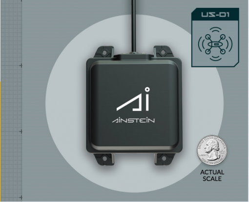
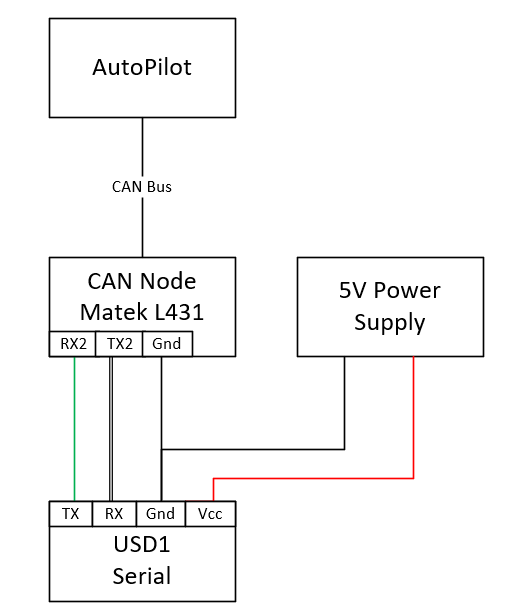

Ainstein US-D1 Radar Altimeter¶
The Ainstein US-D1 Radar Altimeter has a range of 50m, an update rate of 100hz and weighs only 110g.
Warning
currently the manufacturer warns that operation indoors can be problematic due to multi-path reflections…caution is advised
The user manual for this radar unit can be found here.
Note
Support for this sensor is available in ArduPilot firmware versions 4.0 and later
Where to Buy¶
Units can be purchased through Ainstein’s website.
Connecting to the Autopilot¶
The USD1 is available in serial and DroneCAN versions.
For a serial connection you can use any spare Serial/UART port. The example below shows how to connect to SERIAL4 as the first rangefinder.
SERIAL4_PROTOCOL = 9 (Lidar)
SERIAL4_BAUD = 115 (115200 baud)
RNGFND1_TYPE = 11 (USD1-Serial)
RNGFND1_MIN_CM = 50
RNGFND1_MAX_CM = 4500
RNGFND1_GNDCLEAR = 10 or more accurately the distance in centimeters from the range finder to the ground when the vehicle is landed. This value depends on how you have mounted the rangefinder.
For the CAN version, connect via CAN to the autopilot and set the following parameters:
CAN_P1_DRIVER = 1 (first can port driver set to driver 1)
CAN_D1_PROTOCOL = 7 (USD1 protocol for driver 1)
RNGFND1_TYPE = 33 (USD1_CAN)
RNGFND1_MIN_CM = 50
RNGFND1_MAX_CM = 4500
RNGFND1_GNDCLEAR = 10 or more accurately the distance in centimeters from the range finder to the ground when the vehicle is landed. This value depends on how you have mounted the rangefinder.
Testing the sensor¶
Distances read by the sensor can be seen in the Mission Planner’s Flight Data screen’s Status tab. Look closely for “sonarrange”.

Using the sensor with an AP Periph DroneCAN Node¶
The USD1 is available in either CAN or Serial communication protocol versions. The USD1 CAN protocol is different than DroneCAN and hence requires a dedicated CAN port running this protocol. If the autopilot does not have a spare CAN port or spare serial port for conencting the USD1, but has a DroneCAN port setup, you can create another serial port in the system using an AP_Periph CAN node attached to the DroneCAN port. The USD1 MUST be the Serial version for this to work.
To use the USD1 with a CAN Node like the Matek AP_Periph CAN Node L431, use the following set up.
First, flash the AP_Periph device with a firmware that has the rangefinder features. For the Matek AP_Periph CAN Node L431, the latest stable firmware is here.
{kind=link}
Set the parameters in the CAN Node to the following:
RNGFND_BAUDRATE = 115
RNGFND_MAX_RATE = 50
RNGFND_PORT = 1 (UART 2, i.e. TX2, RX2)
RNGFND1_ORIENT = 0 (No matter what orientation)
RNGFND1_TYPE = 11
Warning
RNGFND_PORT is indexed differently than the UARTs on the board. For RNGFND_PORT = 0, use RX1 and TX1 on the board, etc.
Next, set the parameters on the autopilot:
RNGFND1_TYPE = 24 (DroneCAN) Then Restart
RNGFND1_ORIENT = 25 (Down)
RNGFND1_ADDR = 0 (For sensor_id = 0)
Note
If there is more than one rangefinder in the system you will need to determine the Sensor ID for the USD1. Look in CAN inspector for a message “uavcan_equiment_range_sensor_Measurement” for its sensor_id.